Jak mogę Ci pomóc
Jeśli masz wrażenie, że „próbowałeś już wszystkiego”, a problem nadal wraca – to miejsce może być dla Ciebie.
Z jakimi problemami pracuję?
Najczęstsze powody zgłoszeń:
- ból kręgosłupa, który nawraca mimo ćwiczeń lub zabiegów
- ból barku, kolana, biodra „bez jasnej przyczyny”
- napięcia, sztywność, uczucie niestabilności
- drętwienia, mrowienia, uczucie „braku kontroli” nad ciałem
- problemy z układem nerwowym (np. neuropatie)
- urazy sportowe
- zawroty głowy, zaburzenia równowagi
- brak efektów po wcześniejszej rehabilitacji
Dlaczego ból często wraca?
Wiele terapii skupia się na miejscu, które boli. Tymczasem bardzo często przyczyna problemu znajduje się gdzie indziej.
Ciało działa jako całość, a nadrzędną rolę pełni układ nerwowy. Jeśli nieprawidłowo interpretuje on bodźce lub chroni ciało przed ruchem, ból może utrzymywać się mimo „rozluźniania” czy wzmacniania.
Dlatego w mojej pracy:
- nie zaczynam od schematu,
- nie pracuję „na ślepo”,
- szukam przyczyny, a nie tylko miejsca objawu.
Jak wygląda terapia?
Każda wizyta jest indywidualna, ale proces zawsze opiera się na kilku etapach:
- Dokładny wywiad i obserwacja ruchu
- Testy funkcjonalne i neurologiczne – sprawdzające, jak ciało reaguje
- Terapia dobrana do reakcji organizmu, nie do nazwy schorzenia
- Weryfikacja efektu – sprawdzamy, co się zmieniło
- Plan dalszego postępowania – terapia, ćwiczenia lub przerwa
Metody, z których korzystam
W pracy wykorzystuję różne metody, m.in.:
- P-DTR
- elementy neurologii funkcjonalnej
- DNS
- PNF
- terapię tkanek miękkich
- MTG
Nie są one celem samym w sobie. Są narzędziami, które dobieram w zależności od tego, jak reaguje Twój organizm.
Kliknij, aby przeczytać więcej o stosowanych przeze mnie metodach.Dla kogo ta terapia nie jest
Ta forma pracy nie będzie odpowiednia, jeśli:
- szukasz wyłącznie masażu „na rozluźnienie”
- oczekujesz natychmiastowego efektu bez procesu
- nie chcesz współpracować i obserwować reakcji swojego ciała
Jeśli jednak chcesz zrozumieć swój problem i realnie nad nim pracować – jesteś w dobrym miejscu.
Poznaj mnie
mgr Paweł Kozyra Fizjoterapeuta
Jestem fizjoterapeutą z letnim doświadczeniem. Pomagam skutecznie wrócić do sprawności, pracując nad przyczyną problemu, nie tylko objawami.
Kliknij zdjęcie, aby dowiedzieć się więcej →
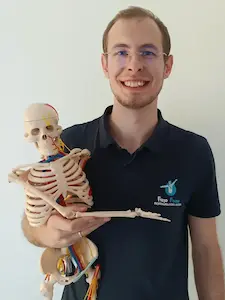
metody
Każdą metodę dobieram indywidualnie do Twojego problemu, aby przywrócić pełną sprawność.
Kliknij nazwę, aby dowiedzieć się więcej →
kursy
Każde szkolenie potwierdza wiedzę i kompetencje, które wykorzystuję w pracy z pacjentami.
Kliknij zdjęcie, aby powiększyć →
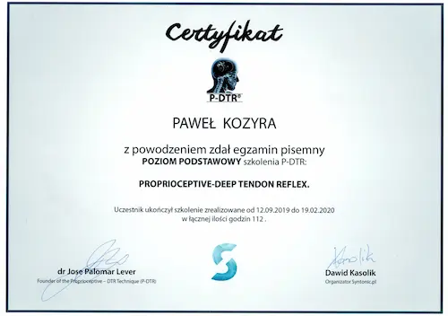
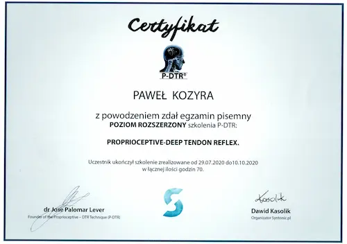
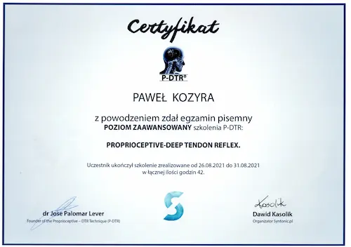
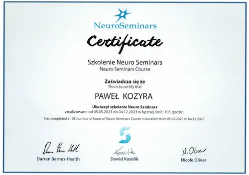
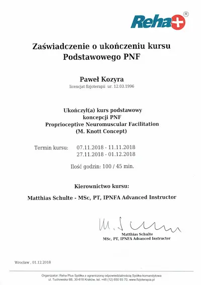
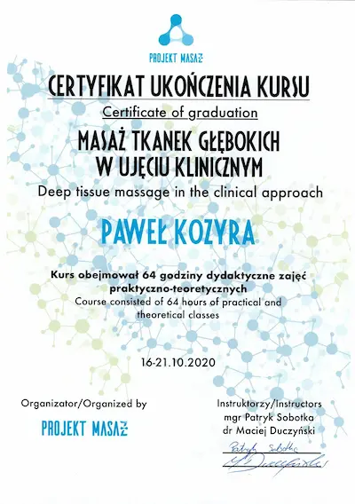
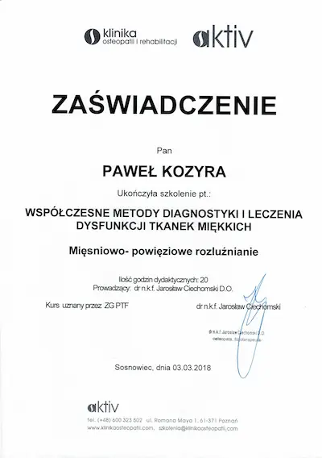
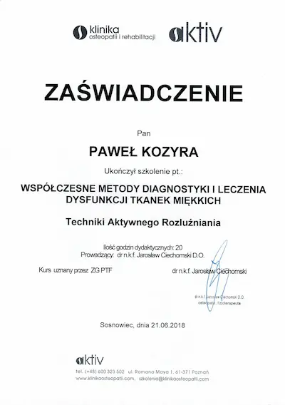
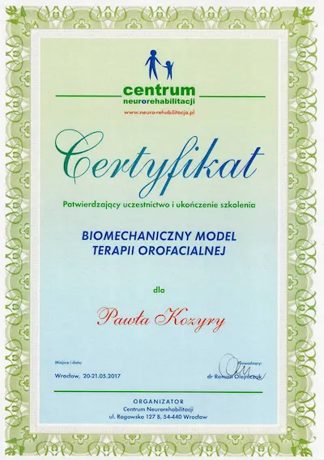
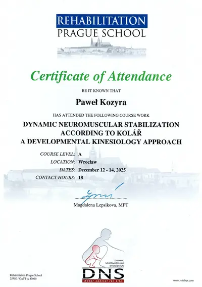
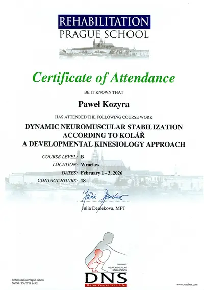
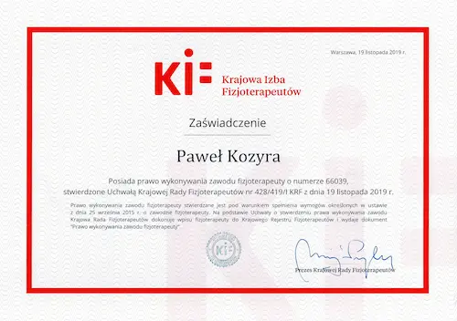
opinie
Pomogłem wielu pacjentom — przeczytaj ich opinie i przekonaj się sam.
Więcej recenzji znajdziesz na moim profilu na Facebooku.
cennik
Jedna jakość terapii — wybierz wygodną formę wizyty.
W gabinecie
200zł Dom Studencki T-22 ul. Wróblewskiego 25, 51-657 Wrocław
Otrzymujesz:
- 🔍 Dokładną konsultację i analizę problemu
- 🎯 Indywidualnie dobraną terapię
- 🏠 Ćwiczenia do samodzielnej pracy w domu
- 🛡️ Porady, jak zapobiegać nawrotom bólu
- 💬 Jasne wyjaśnienie planu terapii
W miejscu wezwania
200zł + koszt dojazdu (ustalany indywidualnie)
Otrzymujesz:
- 🔍 Dokładną konsultację i analizę problemu
- 🎯 Indywidualnie dobraną terapię
- 🏠 Ćwiczenia do samodzielnej pracy w domu
- 🛡️ Porady, jak zapobiegać nawrotom bólu
- 💬 Jasne wyjaśnienie planu terapii
kontakt
Masz pytania? Napisz lub zadzwoń.
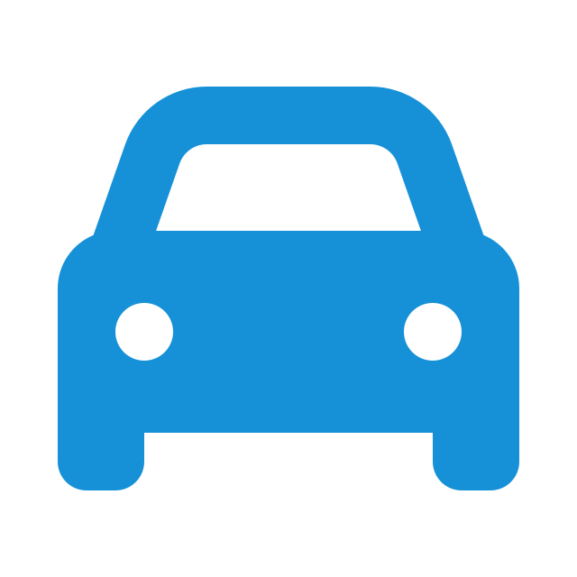
Dojeżdżam do domu pacjenta
Przyjmuję w gabinecie
Dom Studencki T-22 ul. Wróblewskiego 25, 51-657 Wrocław